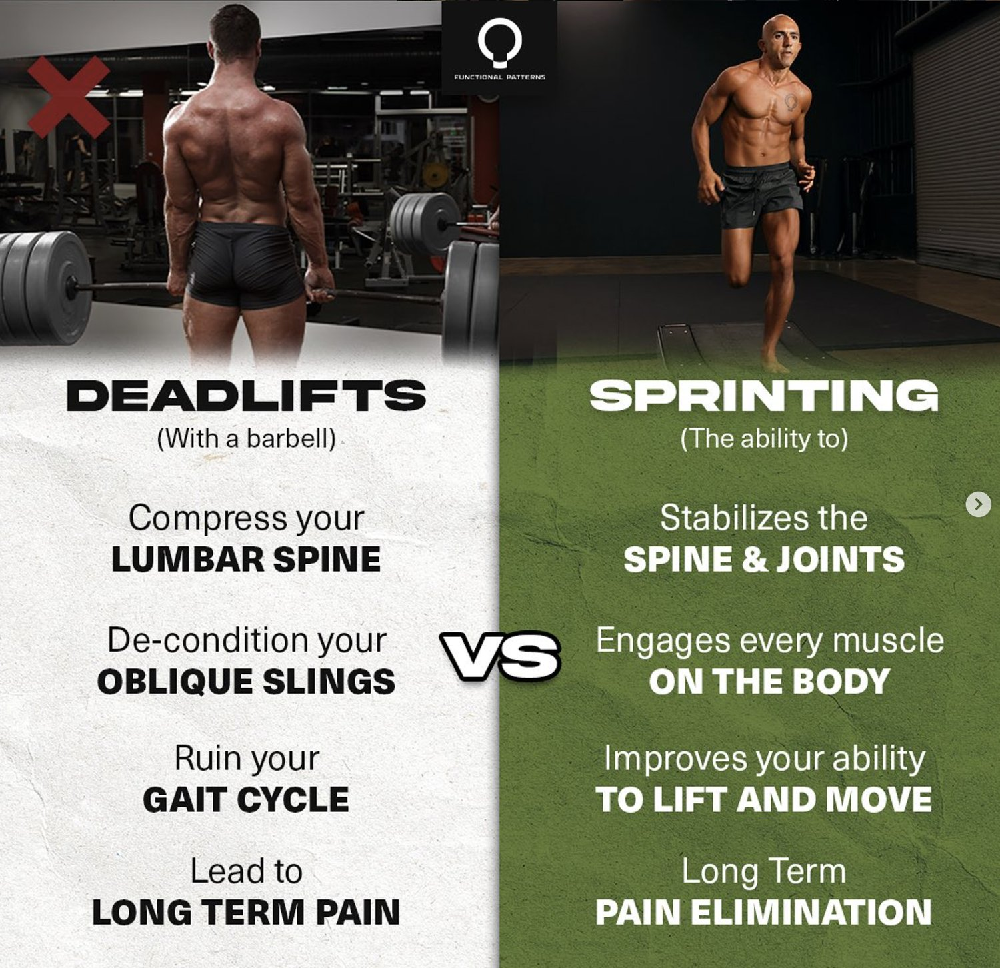

Compound lifts, such as squats, deadlifts, and bench presses, have long been touted as the cornerstone of strength training. We have so many clients come in from injuring their bodies using conventional training - and we can no longer keep blaming ‘poor form'. It's essential to delve deeper into their mechanics and limitations. In this blog, we'll explore why compound lifts can be viewed as isolation exercises, especially when compared to exercises that incorporate multi-dimensional planes of movement, like those pertaining to the gait cycle.
The Problem with Compound Lifts:
“The deadlift is touted as one of the kings of all exercise, yet so many people fail to see the damaging effects it has on the body over time.
As it relates to the posterior chain, doing a loaded bilateral hip hinge and staying stuck in the saggital plane has little to no transferability to how humans move. When you look at world champion athletes function it’s clear that the the transverse plane, frontal plane and saggital plane all have to work together at the same time to create propulsion in the body.
You also have to account for the fact that the posterior chain evolved over millions of years to perform the function of hip extension, and at the top phase of the deadlift there is literally no load placed on glutes. Meaning all of that weight is just creating a shearing force on your lumbar spine that’s going to disfigure it and cause pain over time.”
— Naudi Agular
Squats: Better for Kangaroos than Humans?
Squats are often hailed as the "king of exercises." However, when analyzed critically, squats primarily involve a single plane of movement: up and down. This limited range of motion fails to mimic the complex multi-planar movements that humans perform in daily life. Squats may be great for kangaroos, whose primary movement is hopping, but they fall short in providing comprehensive functional fitness for humans.
Isolation Factor: Squats predominantly target the quadriceps, hamstrings, and glutes while neglecting lateral and rotational movements crucial for real-life activities.
Deadlifts: Another Linear Exercise
Deadlifts, too, are performed primarily in a linear plane—lifting a barbell from the ground to a standing position. While they undoubtedly strengthen the posterior chain, including the lower back, glutes, and hamstrings, they don't encompass the wide range of movements necessary for overall functionality.
Isolation Factor: Deadlifts isolate specific muscle groups and lack the multi-dimensional engagement required for functional movement.

Functional Training (chronic pain and compression) vs Functional Patterns Training
Bench Press: Upper-Body Linearity
The bench press is an upper-body compound lift that targets the chest, shoulders, and triceps. However, like squats and deadlifts, it confines movement to a single plane—the horizontal plane. This limited range of motion doesn't adequately address the complexities of human movement.
Isolation Factor: Bench presses isolate the upper body and neglect the importance of multi-dimensional strength.
The Need for Multi-Dimensional Movement:
To truly achieve functional fitness, it's essential to incorporate exercises that encompass multi-dimensional planes of movement. The gait cycle, which represents the natural walking pattern of humans, offers a blueprint for functional exercises. Here's why exercises related to the gait cycle are the key to functional fitness:
-
Real-World Application: Functional exercises, like lunges, step-ups, and lateral movements, mirror the movements we perform in our daily lives. They enhance our ability to move with agility and balance.
-
Multi-Plane Engagement: Gait cycle exercises engage muscles in various planes, including forward, backward, lateral, and rotational movements. This comprehensive engagement leads to improved overall strength and mobility.
-
Injury Prevention: Functional exercises can help correct imbalances and reduce the risk of injuries by addressing the body's need for multi-dimensional strength.
-
Enhanced Athletic Performance: Athletes benefit greatly from functional training as it improves agility, speed, and coordination, translating into better performance in sports and physical activities.
While compound lifts like squats, deadlifts, and bench presses undoubtedly have their place in strength training, they should not be considered the sole foundation of functional fitness. These exercises primarily work in linear planes and isolate specific muscle groups.
To achieve true functional fitness, it's essential to incorporate multi-dimensional movements that mimic real-world activities. Exercises related to the gait cycle and movements in various planes not only provide a more holistic approach to fitness but also help prevent injuries and enhance overall performance. So, while compound lifts have their merits, don't forget the importance of functional training for a well-rounded and functional physique.
Add one more section that explains that these facts apply to chronic pain rehabilitation, not just athletes. And that training using functional patterns prevents and cures chronic pain. thanks!
ChatGPT
Functional Patterns: The Key to Chronic Pain Rehabilitation
Chronic Pain Rehabilitation:
Chronic pain, whether it stems from a previous injury, postural issues, or an underlying medical condition, can severely impact one's quality of life. Traditional approaches to rehabilitation often focus on isolated muscle strengthening and linear exercises, similar to the compound lifts we discussed earlier. However, this approach may not address the root causes of chronic pain or provide long-lasting relief.
“Running with precision is what’s going to give you the posterior chain development without the compression and problems that come along with deadlifting. Nature carved out a blueprint for humans to move and function a certain way, so if you decide not to take that into consideration when you train, then you’re in for a rough ride.
If there’s one thing Functional Patterns is known for, it’s picking up the pieces and filling in the gaps where others have failed. The deadlift is one of the many ways people have destroyed their bodies thinking it was the optimal way to train. While the intentions of the deadlift might be good, we should always question what might be missing the mark in it’s application.”
— Naudi Agular
It's important to recognise that the principles discussed in this blog aren't limited to athletes or fitness enthusiasts. They have profound implications for individuals dealing with chronic pain and those on a journey of rehabilitation. In fact, functional patterns are a game-changer when it comes to preventing and curing chronic pain.
The Role of Functional Patterns:
Functional patterns, on the other hand, prioritize multi-dimensional movements and exercises that mimic real-world activities. By addressing the body's need for multi-plane engagement and muscle coordination, functional patterns offer a comprehensive approach to chronic pain rehabilitation.
Here's how functional patterns can benefit those dealing with chronic pain:
-
Pain Reduction: Functional patterns can help reduce chronic pain by improving mobility, balance, and overall strength. By addressing the underlying causes of pain, they provide lasting relief.
-
Injury Prevention: Chronic pain often arises from compensatory movements due to injury. Functional patterns can correct these compensations, reducing the risk of further injuries.
-
Improved Daily Function: The ability to perform everyday activities with ease is crucial for individuals with chronic pain. Functional patterns enhance functional fitness, making daily tasks less challenging.
-
Long-Term Solutions: Unlike isolated exercises, functional patterns offer long-term solutions by promoting balanced, multi-dimensional strength and mobility. They address the root causes of pain rather than merely alleviating symptoms.

In conclusion, understanding the limitations of compound lifts and the importance of multi-dimensional movement applies not only to athletes but also to individuals seeking chronic pain rehabilitation. Functional patterns, with their emphasis on comprehensive strength and mobility, offer a powerful approach to preventing and curing chronic pain. Whether you're an athlete looking to enhance performance or someone on a journey towards pain-free living, integrating functional patterns into your routine can be a transformative step towards a healthier, pain-free life.